Linha do tempo
-
1500: Descobrimento do Brasil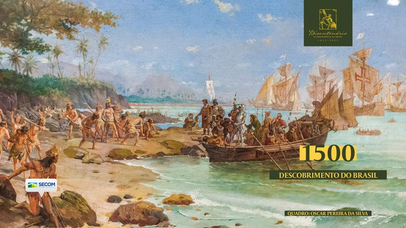 A história do Brasil se inicia em 22 de abril de 1500, data em que Pedro Álvares Cabral e sua esquadra aportaram pela primeira vez naquela que ficou conhecida como Terra de Santa Cruz. Cavaleiro da Ordem de Cristo, Cabral partira de Portugal rumo à Índia em uma expedição de 13 embarcações. O navegador estampava em sua nau a cruz da Ordem, financiadora das grandes navegações. No caminho, Cabral e parte da esquadra adentraram o Oceano Atlântico rumo ao Ocidente e descobriram as terras de nosso País. Na carta de Pero Vaz de Caminha, a cena foi descrita nos seguintes termos: “Neste dia, a horas de véspera, houvemos vista de terra! Primeiramente dum grande monte, mui alto e redondo; e doutras serras mais baixas ao sul dele; e de terra chã, com grandes arvoredos: ao monte alto o capitão pôs nome O Monte Pascoal e à terra A Terra da Vera Cruz.” Logo que os nativos foram se aproximando, o piloto Afonso Lopes trouxe dois deles para a nau de Cabral, como sinal de amizade, e foram recebidos com muita festa. O encontro entre índios e portugueses foi marcado pelo tom pacífico, amigável e de mútuo interesse por parte dos dois povos. A receptividade, a alegria e a boa acolhida ainda hoje são marcas presentes no comportamento dos brasileiros.
-
1500: Primeira Missa no Brasil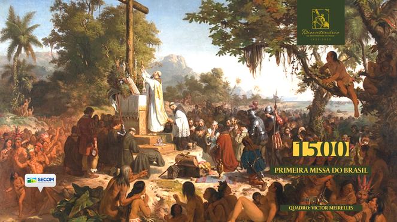
Celebrada pelo frei Henrique de Coimbra, a primeira missa no Brasil aconteceu no dia 26 de abril de 1500, primeiro domingo após a expedição de Pedro Álvares Cabral chegar às terras brasileiras. Muitos indígenas ouviram a missa também. Pero Vaz de Caminha registrou: “Enquanto estivemos à missa e à pregação, seria na praia outra tanta gente, pouco mais ou menos como a de ontem, com seus arcos e setas, a qual andava folgando. E olhando-nos, sentaram-se. E, depois de acabada a missa, assentados nós à pregação, levantaram-se muitos deles, tangeram corno ou buzina, e começaram a saltar e dançar um pedaço.” Encerrada a missa, o padre iniciou uma pregação sobre a história do Evangelho, citando por fim a vinda dos portugueses sob obediência da Cruz e a descoberta dessas terras. Em 1139, Jesus Cristo aparecera a D. Afonso Henriques, o primeiro rei de Portugal, e disse-lhe que, por meio dos portugueses, a cristandade seria levada a nações e terras muito remotas. Os portugueses entenderam a cena como o cumprimento da profecia. Poucos dias depois, foi erguida uma cruz com a ajuda dos índios e uma nova missa foi rezada. Os nativos, segundo os relatos, imitavam os movimentos dos portugueses. Em seguida, os portugueses beijaram a cruz diante dos índios, demonstrando sua devoção. O Brasil, rico em diversidade, nasce com o encontro de portugueses e índios aos pés da Cruz. A missa foi o evento mais marcante do primeiro contato entre os dois povos. Um dos navios da frota de Pedro Álvares Cabral retornou a Portugal, enquanto os demais seguiram o caminho para a Índia, deixando na então Terra da Vera Cruz alguns degredados e grumetes. Os valores religiosos e de respeito mútuo ainda hoje estão presentes na cultura do Brasil.
-
1532: Fundação de São Vicente, a primeira vila do Brasil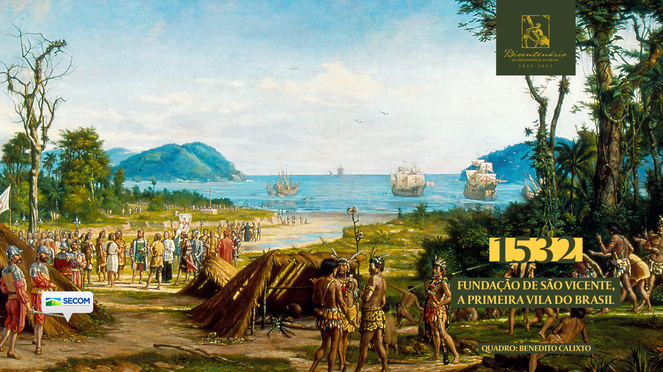
Fundada em 1532 por Martim Afonso de Sousa, São Vicente foi a primeira vila do território brasileiro. Nela foi instalada a primeira Câmara Municipal do País e a mais antiga de todo o continente americano. O nome da vila foi escolhido em homenagem a Vicente Mártir. A região já era conhecida como um ponto de parada de reparos e reabastecimentos para viagens marítimas. No povoado que ali havia, a relação com os índios, principalmente tamoios, era pacífica. A antiga vila está hoje situada na metade ocidental da ilha de São Vicente, sendo o espaço compartilhado com a cidade de Santos. Com o estabelecimento da primeira vila, inicia-se a história do povoamento e do desenvolvimento do Brasil.
-
1534: Estabelecimento das divisões do Brasil em capitanias hereditárias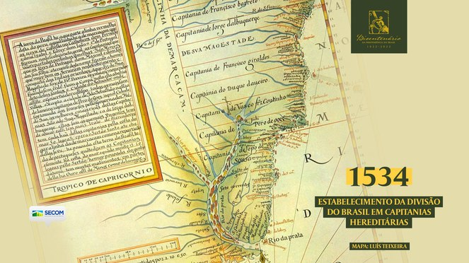
A divisão do território do Brasil em capitanias hereditárias aconteceu em 1534, quando a coroa portuguesa decidiu contar com a participação dos melhores cidadãos para colonizar e defender as terras recém descobertas. O território foi dividido em 14 capitanias e concedido a 12 beneficiários, que eram antigos navegantes, homens de guerra e personagens da corte. Eles se tornaram capitães e governadores nas novas divisões. Os títulos eram transmissíveis por herança ao filho homem mais velho, e o Capitão tinha o direito de criar vilas e repartir com cristãos as terras como sesmarias. A divisão impulsionou o crescimento de vilas, que aos poucos se transformaram em províncias e foram dando forma aos contornos dos estados brasileiros. Começaram, nessa época, a surgir os primeiros conflitos entre indígenas e portugueses. Em 1537, o Papa Paulo III condenou a escravidão, citando especialmente a dos povos indígenas. As primeiras leis que restringiam a escravidão indígena no Brasil foram promulgadas pelo Rei Sebastião I em 1570. A criação de novas capitanias hereditárias seguiu no século XVII. O sistema foi extinto cerca de um ano antes da declaração da Independência do Brasil e as capitanias tornaram-se províncias. Essas divisões foram fundamentais para o povoamento e o desenvolvimento do Brasil.
-
1549: Chegada dos jesuítas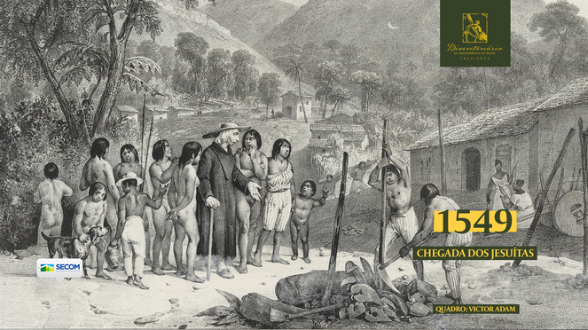
Liderados pelo Padre Manuel da Nóbrega, os jesuítas chegaram ao Brasil em 29 de março de 1549, na armada do recém nomeado governador-geral Tomé de Sousa. O primeiro provincial, Padre Manuel, e mais cinco companheiros da Companhia de Jesus desembarcaram na Bahia com a missão de catequizar os índios e integrá-los aos costumes portugueses. Após doze dias na colônia, ele decidiu traduzir orações cristãs para a língua nativa. Em pouco tempo, os índios já estavam cantando orações cristãs. Os indígenas contavam uma antiga história sobre um pregador, chamado Pai Zomé, que havia vindo de longe a estas terras e apresentado-lhes o pão e a cruz. Padre Manuel o identificou como São Tomé. Junto a Duarte da Costa, segundo governador-geral do Brasil, vieram mais jesuítas e, entre esses, São José de Anchieta. Os sacerdotes corrigiram o canibalismo e a poligamia dos índios, combateram a sua escravidão e os excessos dos castigos sobre escravos africanos. Desenvolveram colégios e fomentaram as ciências e as artes. A principal contribuição dos jesuítas na formação do Brasil deu-se na área da educação, sendo eles os primeiros educadores de nossa nação.
-
1549: Fundação da cidade de Salvador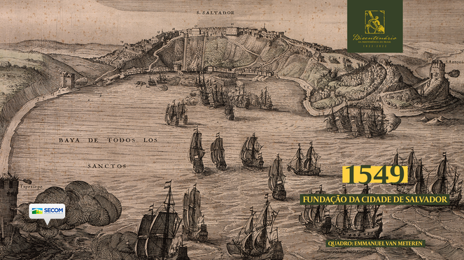
A cidade de Salvador foi fundada em 29 de março de 1549 pelo primeiro governador-geral do Brasil, Tomé de Sousa. Ele chegou em uma comitiva de seis embarcações com a ordem de fundar a cidade-fortaleza de São Salvador. Mais de mil pessoas acompanharam sua chegada. A partir de então, a cidade se estabeleceu como capital do Estado Brasileiro. Por muitos anos, foi a maior cidade das américas. Teve papel fundamental nos primeiros séculos do desenvolvimento do Brasil. No local de desembarque, na Praia do Porto da Barra, hoje está o Marco da Fundação da Cidade, uma coluna de 6 metros de altura feita em pedra de lioz. A cidade segue o modelo de urbanização adotado por várias cidades costeiras portuguesas, explorando em sua arquitetura as características geográficas locais.
-
1554: Fundação da cidade de São Paulo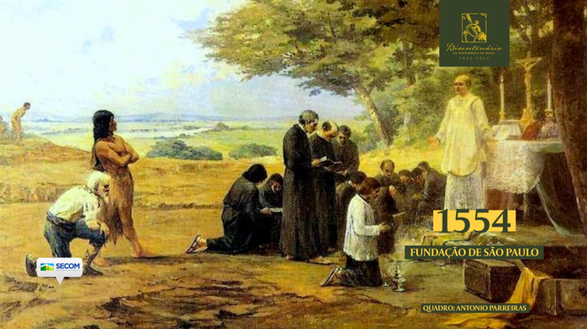
A povoação de São Paulo dos Campos de Piratininga se iniciou em 25 de janeiro de 1554 com a construção de um colégio jesuíta. O colégio foi fundado por 12 padres, liderados por Manuel da Nóbrega e José de Anchieta, no dia em que se celebra a conversão do apóstolo Paulo de Tarso. Por isso, foi ao santo dedicado. Foi construído no alto de uma colina escarpada, entre os rios Anhangabaú e Tamanduateí. A princípio, funcionava num barracão feito de taipa de pilão e tinha por finalidade a catequese dos índios que viviam na região do Planalto de Piratininga. Na região, alguns paulistas iniciaram as explorações chamadas de bandeiras e foram chamados de bandeirantes. Esses entraram em conflito com os jesuítas pelas discórdias a respeito do tratamento dos índios. A vila foi elevada a cidade em 1711.
-
1565: Fundação da cidade do Rio de Janeiro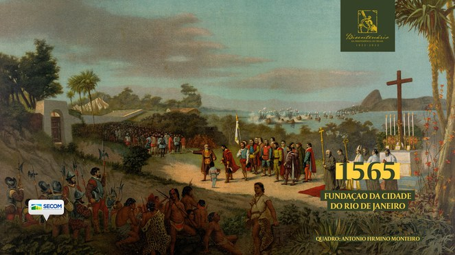
A Baía de Guanabara foi descoberta pelo explorador português Gaspar de Lemos em 1 de janeiro de 1502. No entanto, em 1 de novembro de 1555, os franceses apossaram-se da região, estabelecendo uma colônia na atual Ilha de Villegagnon. Eles ergueram o Forte Coligny e consolidaram alianças com os índios tupinambás. Para combatê-los, os portugueses se aliaram aos índios temiminós, e juntos atacaram e destruíram a colônia francesa em 1560. Persistindo a presença francesa na região, um grupo portugueses, sob o comando de Estácio de Sá, desembarcou entre o Morro Cara de Cão e o Morro do Pão de Açúcar, fundando, a 1 de março de 1565, a cidade de São Sebastião do Rio de Janeiro. Conquistado o território, em uma pequena praia protegida pelo Morro do Pão de Açúcar, edificaram o embrião da Fortaleza de São João. A expulsão e derrota definitiva dos franceses, no entanto, só se deu em janeiro de 1567. A vitória de Estácio de Sá garantiu a posse do Rio de Janeiro, rechaçando, a partir daí, novas tentativas de invasões estrangeiras e expandindo seu domínio sobre a região. Com cerca de 30 mil habitantes na segunda metade do século XVII, o Rio de Janeiro tornou-se a cidade mais populosa do Brasil, passando a ter papel fundamental no domínio colonial. A exploração de jazidas de ouro em Minas Gerais no século XVIII consolidou o Rio de Janeiro, por sua proximidade, como centro portuário e econômico. Futuramente seria, durante quase dois séculos, a capital do Brasil.
-
1750: Assinatura do Tratado de Madrid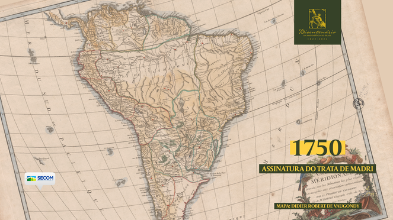
Assinado em 1750 entre os reis João V de Portugal e Fernando VI de Espanha, o Tratado de Madrid substituiu o Tratado de Tordesilhas (1494) e definiu os limites das colônias sul-americanas. As duas nações reconheceram que haviam violado o tratado anterior e pacificamente chegaram a um acordo. Privilegiando os contornos de rios e relevos e as posses efetivas de cada país naquele momento, o tratado estabeleceu para o Brasil um formato muito próximo ao atual. Nos anos seguintes, novos tratados foram realizados, mas as bases do Tratado de Madrid foram preservadas. O episódio, portanto, é um dos mais importantes da história da diplomacia brasileira.
-
1763: Transferência da capital de Salvador para Rio de Janeiro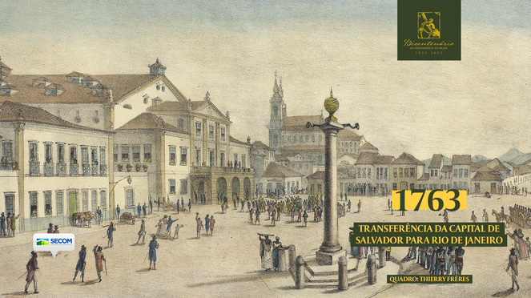
Em 1763, após o crescimento do Rio de Janeiro por sua proximidade a Minas Gerais, o ministro português Marquês de Pombal transferiu para a cidade a capital, que até então era na cidade de Salvador, e elevou o Brasil a Vice-Reinado. As duas cidades tinham população de tamanho semelhante. A nova localização da capital era também militarmente estratégica, por sua maior proximidade dos ambientes de conflito com os espanhóis no sul. A mudança teve papel importante no desenvolvimento político e cultural de nosso país, que neste ano celebra o bicentenário de sua Soberania, Liberdade e Independência.
-
1808: Mudança da Corte Portuguesa para o Rio de Janeiro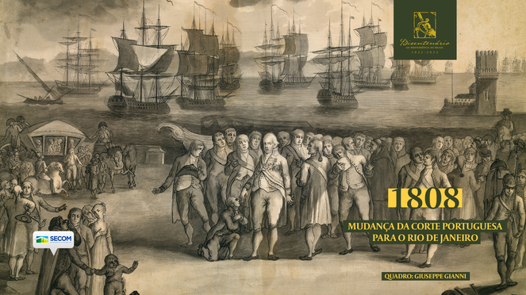
O imperador francês Napoleão Bonaparte já havia conquistado boa parte da Europa, quando pressionou Portugal a se unir com a França contra a Inglaterra. A corte portuguesa não cedeu às exigências francesas e sofreu invasão em novembro de 1807. Sob comando do príncipe regente Dom João VI, a corte portuguesa imediatamente embarcou para o Brasil, deixando Napoleão Bonaparte “a ver navios”. O imperador francês chegou a dizer sobre Dom João VI: “O único que me enganou”. A chegada da corte portuguesa no Brasil em 1808 propiciou o desenvolvimento de diversos setores de nosso país, que saiu da condição de colônia. D. João abriu a Imprensa Régia e criou no Brasil instituições como a Real Fábrica de Pólvora, o Banco do Brasil, a Real Academia Militar e o Laboratório Químico-Prático. De 60 mil habitantes em 1808, a população do Rio de Janeiro subiu para 112 mil em 1821, quando a família real deixou o Brasil. Pelas mudanças ocorridas no País, o período em que a corte aqui residiu teve relevante papel no processo que desencadeou em nossa independência.
-
1815: Elevação do Brasil a Reino Unido de Portugal e Algarve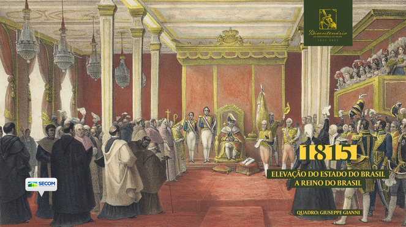
Em 1815, já com a corte portuguesa residindo em nosso país, o então Estado do Brasil foi elevado a Reino, unindo-se em igual dignidade a Portugal enquanto Reino Unido de Portugal, Brasil e Algarves. A medida dava à corte no Rio de Janeiro o direito de voz e de voto nas negociações do Congresso de Viena sem precisar retornar a Lisboa. O Reino Unido teve como primeira soberana Dona Maria I e como primeira capital o Rio de Janeiro. Dom João VI governava como príncipe-regente. Após a morte da mãe em 1816, assumiu o Governo como rei. Com a Revolução Liberal do Porto e a instauração da monarquia constitucional, o centro político foi transferido novamente para Lisboa. A elevação do Brasil a Reino impactou a política nacional e o sentimento do brasileiro, que se viu pela primeira vez em posição de igualdade à metrópole. Foi aberto o caminho para a Independência do Brasil em 1822.
-
1822: Dia do Fico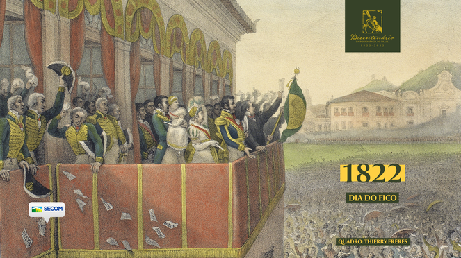
Após mais de uma década residindo no Brasil, a corte foi pressionada a retornar a Portugal. Dom João embarcou a Lisboa em 1821 e deixou Dom Pedro como príncipe regente do Brasil. Os deputados portugueses planejavam fragmentar o Brasil em províncias de Portugal e chegaram a restabelecer o monopólio sobre os produtos brasileiros, anular os tribunais e instituições criadas por D. João no Rio de Janeiro e exigir o retorno imediato de D. Pedro a Lisboa. Um abaixo-assinado de 8 mil assinaturas pediu ao príncipe que ficasse no Brasil. Orientado pelo pai, Dom Pedro I decide ficar, contrariando a classe política portuguesa. Uma semana depois, o príncipe organizou o governo no Brasil sob a liderança do ministro José Bonifácio. O clima de Independência já estava no ar.
-
1822: Independência do Brasil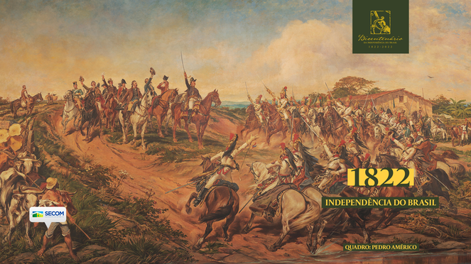
Após decidir ficar no Brasil e desobedecer às ordens da classe política portuguesa, Dom Pedro recebeu o título de “defensor perpétuo e protetor do Brasil”. Os portugueses insistiram em dar ordens ao príncipe para que retornasse a Portugal e que dissolvesse o novo governo e iniciaram os preparativos bélicos para atacar o Brasil. Dom Pedro declarou seu descontentamento em carta a seu pai: “É um impossível físico e moral Portugal governar o Brasil, ou o Brasil ser governado por Portugal.” Devido aos rumores de rebeliões de separatistas, partiu em velozes viagens a cavalo rumo a cidades relevantes da época. Durante uma delas, no dia 2 de setembro, Dona Leopoldina organizou uma sessão extraordinária, onde os conselheiros analisaram as últimas ações de Portugal contra o Brasil. Em 7 de setembro de 1822, o príncipe recebeu as mensagens da esposa, que o convencia a separar o Brasil de Portugal, e de José Bonifácio, que o informava que os atos do ministro haviam sido anulados pelos portugueses. Às margens do Ipiranga, Dom Pedro deu o brado da Independência, desvinculando o Brasil de Portugal e dando início à nossa soberania. Seu discurso foi relatado pelo Padre Belchior da seguinte forma: “Amigos, as Cortes portuguesas querem escravizar-nos e perseguem-nos. De hoje em diante, nossas relações estão quebradas. Nenhum laço nos une mais. Laços fora, soldados! Viva a independência, a liberdade, e a separação do Brasil! Pelo meu sangue, pela minha honra, pelo meu Deus, juro fazer a liberdade do Brasil. Brasileiros, a nossa divisa de hoje em diante será Independência ou Morte!” Chegou em São Paulo anunciando a Independência, sendo recebido com grande festa e sendo chamado de Rei do Brasil. Logo foi criada a primeira bandeira do Brasil e Dom Pedro foi aclamado o Imperador do Brasileiro. Escreveu a seu pai: “Tive a honra de receber de Vossa Majestade uma carta (...) na qual Vossa Majestade me repreende pelo meu modo de escrever e falar da facção luso-espanhola (...); eu não tenho outro modo de escrever, e como o verso era para ser medido pelos infames deputados europeus e brasileiros do partido dessas despóticas cortes executivas, legislativas e judiciárias, cumpria ser assim (...). “Embora se decrete a minha deserdação, embora se cometam todos os atentados que em clubes carbonários forem forjados, a causa santa não retrogradará, e eu antes de morrer direi aos meus caros brasileiros: ‘Vêde o fim de quem se expôs pela pátria, imitai-me’. (...) “Firme nestes inabaláveis princípios, digo (tomando a Deus por testemunha e ao mundo inteiro), a essa cáfila sanguinária, que eu, como Príncipe Regente do reino do Brasil e seu defensor perpétuo, hei por bem declarar todos os decretos pretéritos dessas facciosas, horrorosas, maquiavélicas, desorganizadoras, hediondas e pestíferas cortes, que ainda não mandei executar, e todos os mais que fizerem para o Brasil, nulos, irritos, inexequíveis, e como tais com um veto absoluto, que é sustentado pelos brasileiros todos, que, unidos a mim, me ajudam a dizer: ‘De Portugal nada, nada; não queremos nada’. “Jazemos por muito tempo nas trevas; hoje vemos a luz. Se Vossa Majestade cá estivesse seria respeitado, e então veria que o povo brasileiro, sabendo prezar sua liberdade e independência, se empenha em respeitar a autoridade real, pois não é um bando de vis carbonários, e assassinos, como os que têm a Vossa Majestade no mais ignominioso cativeiro. “Triunfa e triunfará a independência brasílica ou a morte nos há de custar. “O Brasil será escravizado, mas os brasileiros não; porque enquanto houver sangue em nossas veias há de correr, e primeiramente hão de conhecer melhor o — Rapazinho — e até que ponto chega a sua capacidade, apesar de não ter viajado pelas cortes estrangeiras. (...) “Sou de Vossa Majestade, com todo o respeito, filho que muito o ama e súdito que muito o venera. “PEDRO.” Com essas firmes palavras cheias de amor à Pátria, o Brasil bravamente conquistou as suas SOBERANIA, LIBERDADE e INDEPENDÊNCIA.